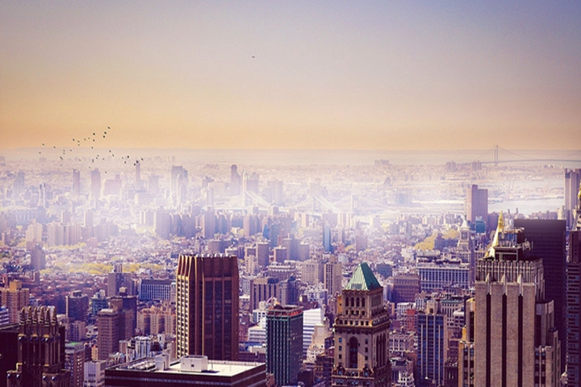
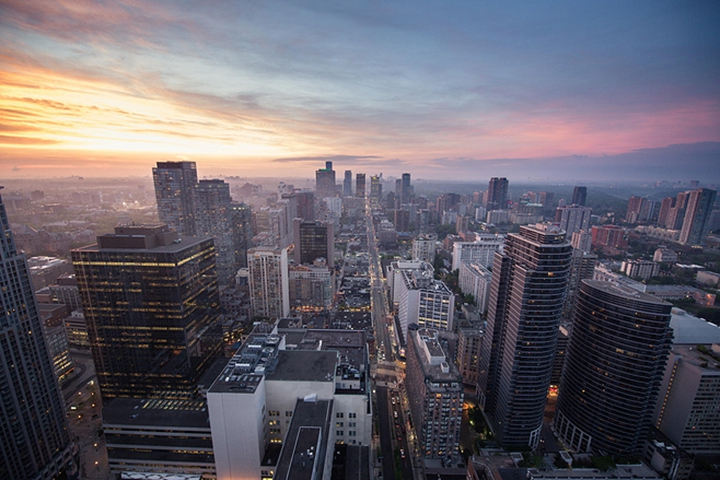
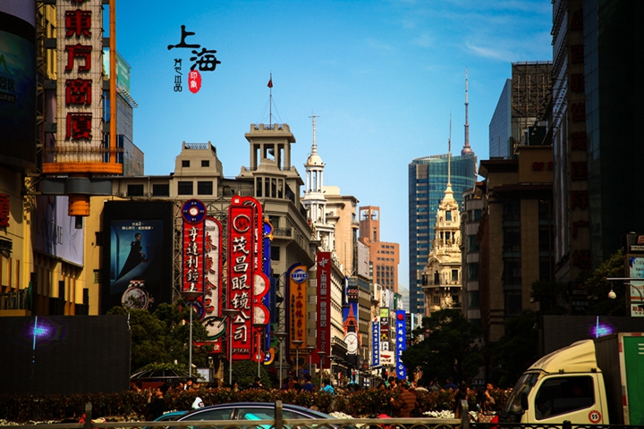
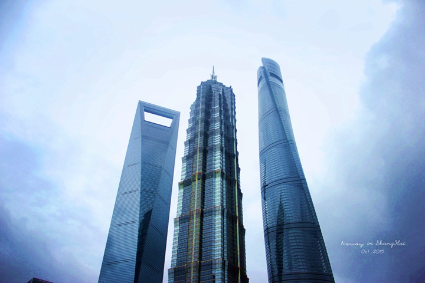
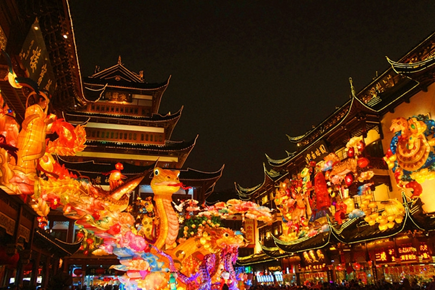
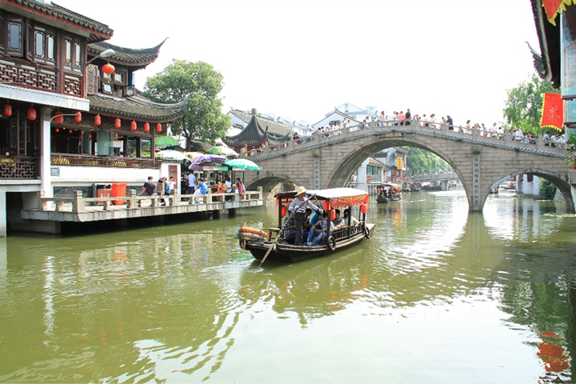

-
千风万景中遇见你 - 首页
- 精选
- 邂逅
-

- 消息

目的地>中国>上海
Shang Hai


上海

上海天气
晴 9℃~22℃
192人来过这里
27篇旅游日志
27篇旅游日志

景点介绍
上海，又称“上海滩”，是一座极具现代化而又不失中国传统特色的国际大都市。由于其地处中国漫长海岸线的最正中，是中国四个中央直辖市之一，是中国的历史文化名城。
百余年来，上海一直是中国商业的中心、财富的汇聚地，是中国仅次于香港的著名“购物乐园”，更是和世界联系最紧密的那根纽带。 上海也是一个新兴的旅游目的地，由于它深厚的文化底蕴和众多的历史古迹，如上海的地标——浦西的外滩和新天地。
位于浦东的东方明珠广播电视塔与金茂大厦却呈现出另一番繁华景象，它们与上海环球金融中心等建筑共同组成了全球最壮丽的天际线之一，而2014年将建成的上海中心，更会为“东方巴黎”添上灿烂的一笔。此外，上海迪斯尼乐园也将于2015年开张。
昔日的上海烙印着 “十里洋场”的繁华，讲述着旧上海滩的浮华旧梦。今日的上海，则以浦东开发开放为代表，日新月异的都市面貌使上海成为展示中国经济发展和改革开放新成就的窗口，并于2010年成功举办了第41届世界博览会。
景点美照






- 2016-2017© 遇见网® yujian.com All rights reserved.Version v1.00
遇见网为旅行爱好者提供记录自己旅途见闻并展示的个人空间。